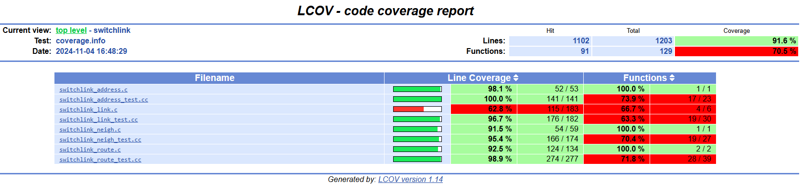
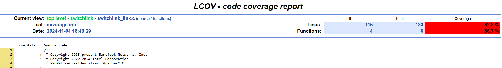
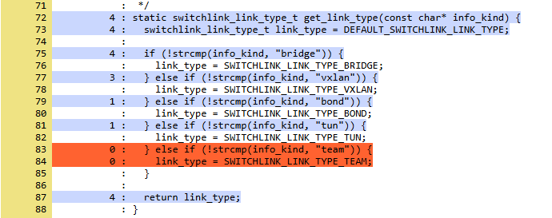

Running Krnlmon Unit Tests
Building the Unit Tests
This guide explains how to build and run the krnlmon unit tests, and how generate a code coverage report for them.
Note
To keep things simple, the examples in this guide assume that you are using presets to configure cmake. You may substitute any of the other methods, if you wish.
Full build
The krnlmon unit tests are included in a full build. There is no need to build anything else.
Targeted build
It is not necessary to do a full build. You can limit the build to the unit tests and their dependencies.
The first step is to configure the build.
cmake --preset es2k
Then build the unit tests, specifying the krnlmon-unit-tests target.
cmake --build build -j4 --target krnlmon-unit-tests
Running the Unit Tests
To run the unit tests, change to the build directory and issue the ctest command
(cd build; ctest -L krnlmon --output-on-failure)
The options are:
-L krnlmonSpecifies that only the krnlmon unit tests should be run.
--output-on-failureInstructs ctest to write the output of failing tests to the console. Normally it goes only to the test log.
Sample output:
Test project /home/elrond/palantir/build
Start 1: switchlink_link_test
1/5 Test #1: switchlink_link_test ............. Passed 0.01 sec
Start 2: switchlink_address_test
2/5 Test #2: switchlink_address_test .......... Passed 0.00 sec
Start 3: switchlink_neighbor_test
3/5 Test #3: switchlink_neighbor_test ......... Passed 0.00 sec
Start 4: switchlink_route_test
4/5 Test #4: switchlink_route_test ............ Passed 0.00 sec
Start 5: switchsde_es2k_test
5/5 Test #5: switchsde_es2k_test .............. Passed 0.00 sec
100% tests passed, 0 tests failed out of 5
Label Time Summary:
krnlmon = 0.02 sec*proc (5 tests)
Total Test time (real) = 0.03 sec
Details of the run are stored in LastTest.log in the build/Testing/Temporary folder.
Measuring Code Coverage
Build with coverage enabled
To measure unit test code coverage, you must enable the TEST_COVERAGE option when you configure the build.
cmake --preset es2k -DTEST_COVERAGE=ON
cmake --build build -j4 --target krnlmon-unit-tests
Run tests and generate report
The scripts directory contains a set of bash scripts to run the tests,
analyze the coverage measurements, and generate an HTML report for each
(target, test label) combination:
scripts/es2k/report-ovsp4rt-coverage.sh
scripts/es2k/report-krnlmon-coverage.sh
scripts/dpdk/report-ovsp4rt-coverage.sh
scripts/dpdk/report-krnlmon-coverage.sh
To generate the report:
./scripts/es2k/report-krnlmon-coverage.sh
Sample output:
(test summary omitted)
Performing coverage
Processing coverage (each . represents one file):
.........
Accumulating results (each . represents one file):
.........
Covered LOC: 1136
Not covered LOC: 101
Total LOC: 1237
Percentage Coverage: 91.84%
Capturing coverage data from build/krnlmon/krnlmon/
Found gcov version: 9.4.0
Using intermediate gcov format
Scanning build/krnlmon/krnlmon/ for .gcda files ...
Found 9 data files in build/krnlmon/krnlmon/
(progress messages omitted)
Overall coverage rate:
lines......: 91.8% (1136 of 1237 lines)
functions..: 70.8% (97 of 137 functions)
Coverage report is in build/Coverage/krnlmon/es2k.
View the coverage report
Use a browser to open build/Coverage/krnlmon/es2k/index.html.

To see the summary report for the switchlink directory, click on its link.

To see the report for switchlink_link.c, click on its link.

Scroll down the page to see which parts of the file are covered by the unit test (in blue), and which parts are not covered (in orange)
